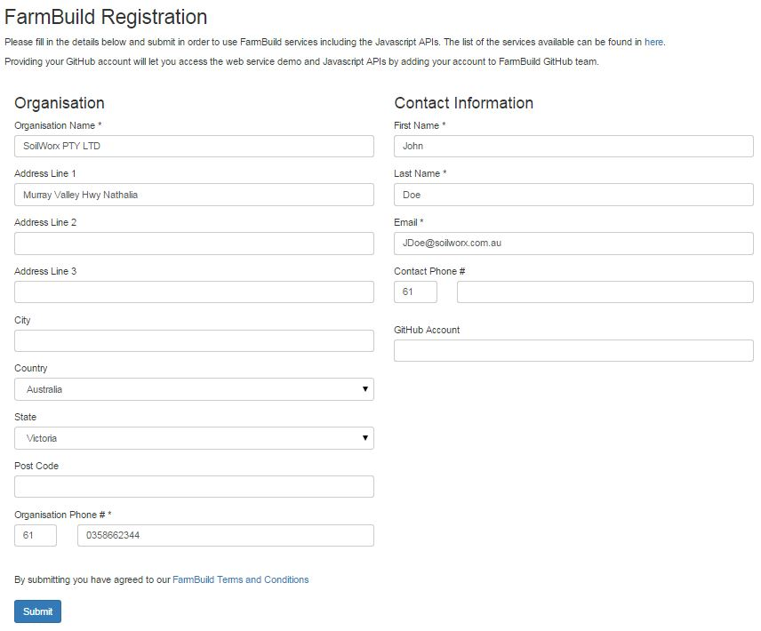
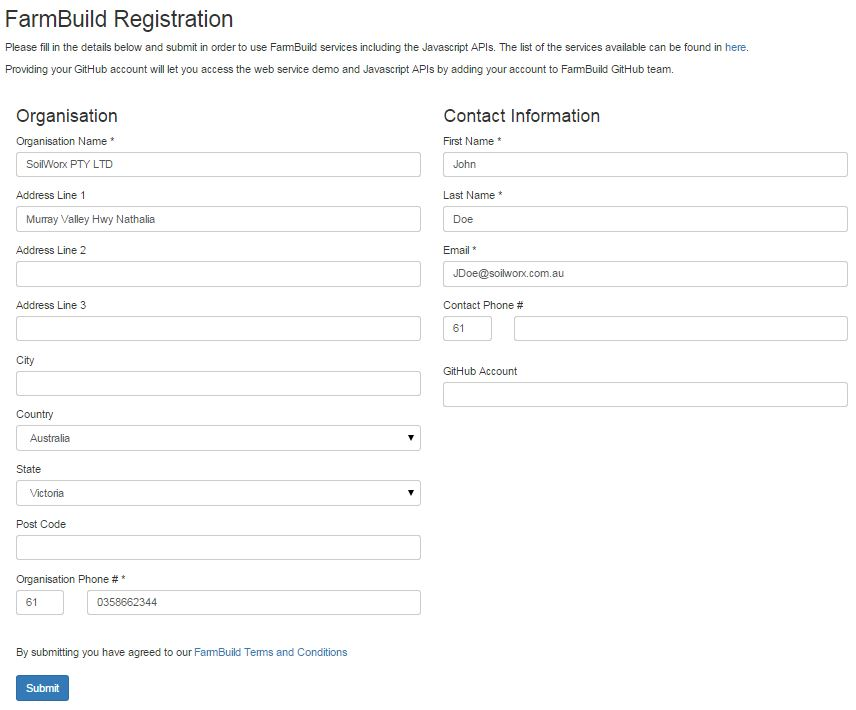

FarmBuild Heading
Tasks...
- Capture FarmBuild user information.
- Provide access to FarmBuild web services through authentication.
- Provide a communication link to the FarmBuild support services.
More text


FarmBuild Heading
Tasks...
More text
